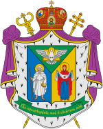

|
 |
 |

The Ukrainian Catholic ChurchThe Ukrainians received the Christian faith from the Byzantines, and their church was originally linked to the Patriarchate of Constantinople. By the 14th century most Ukrainians were under the political control of Catholic Lithuania. Metropolitan Isidore of Kiev attended the Council of Florence and agreed to the 1439 act of union between Catholics and Orthodox. Although many Ukrainians within Lithuania initially accepted this union, within a few decades they had rejected it.
In 1569, when Lithuania and Poland united to form a single commonwealth, most of Ukraine passed to Poland. By this time Protestantism was expanding rapidly in the Ukrainian lands, and the Jesuits had begun to work for a local union between Catholics and Orthodox as a way of reducing Protestant influence. Soon many Orthodox also began to view such a union favorably as a way of improving the situation of the Ukrainian clergy and of preserving their Byzantine traditions at a time when Latin Polish Catholicism was expanding.
These developments culminated in a synod of Orthodox bishops at Brest in 1595-1596 which proclaimed a union between Rome and the Metropolitan province of Kiev. This event sparked a violent conflict between those who accepted the union and those who opposed it. The dioceses of the far western province of Galicia, which lie at the heart of what is now the Ukrainian Catholic Church, adhered to the union much later (Przemysl in 1692 and Lviv in 1700). By the 18th century, two-thirds of the Orthodox in western Ukraine had become Greek Catholic.
But as Orthodox Russia expanded its control into Ukraine, the union was gradually suppressed. In 1839, Tsar Nicholas I abolished it in all areas under Russian rule with the exception of the eparchy of Kholm (in Polish territory), which was itself integrated into the Russian Orthodox Church in 1875. Thus by the end of the 19th century Greek Catholicism had virtually disappeared from the empire.
But the Ukrainian Catholic Church survived in Galicia, which had come under Austrian rule in 1772 and passed to Poland at the end of World War I. The church flourished under the energetic leadership of Metropolitan Andrew Sheptytsky, who was Archbishop of Lviv from 1900 to 1944. The situation changed dramatically, however, at the beginning of World War II, when most of Galicia was annexed by the Soviet Union.
The new Soviet administration acted decisively to liquidate the Ukrainian Catholic Church. In April 1945 all its bishops were arrested, and the following year they were sentenced to long terms of forced labor. In March 1946 a "synod" was held at Lviv which officially dissolved the union and integrated the Ukrainian Catholic Church into the Russian Orthodox Church. Those who resisted were arrested, including over 1,400 priests and 800 nuns. Metropolitan Joseph Slipyj, the head of the church, was sent to prison in Siberia. He was released in 1963 and exiled to Rome. In the same year he was given the title Major Archbishop of Lviv of the Ukrainians. He was made a cardinal in 1965 and died in 1984.
Although the exact role played by the Moscow Patriarchate in the suppression has not been clearly established, the events of 1946 poisoned the atmosphere between Ukrainian Catholics and Orthodox. All this came to the surface in the late 1980s when the new religious freedom inaugurated by Soviet President Michael Gorbachev enabled the Ukrainian Catholic Church to emerge from the catacombs.
On December 1, 1989, Ukrainian Catholic communities were given the right to register with the government. With the support of the local authorities, Ukrainian Catholics gradually began to take possession of their former churches. All this marked the beginning of a strong Ukrainian Catholic resurgence in the region. As this was happening, the Moscow Patriarchate protested that violence had been used in repossessing some churches (a claim the Catholics denied), and that Ukrainian Catholics were attempting to expand at the expense of the Orthodox. The situation was complicated by the strong presence of the Ukrainian Autocephalous Orthodox Church in western Ukraine. While many property disputes are still unresolved, for the most part a peaceful modus vivendi had been worked out by the mid-1990s.
In the meantime, the Ukrainian Catholic Church was resuming a normal ecclesial life. On March 30, 1991, Myroslav Ivan Cardinal Lubachivsky, the exiled head of the church, was able to leave Rome and take up residence in Lviv. In May 1992 Ukrainian Catholic bishops from all over the world convened for a synod in Lviv for the first time in many decades. In August 1992 the remains of Joseph Cardinal Slipyj were translated from Rome to Lviv where he was buried next to Metropolitan Andrew Sheptytsky. In July 1993 four new dioceses were created in Ukraine from the territory of Lviv, Ivano-Frankivsk, and the Ukrainian section of the diocese of Przemysl of the Ukrainians, Poland. In April 1996 an Archepiscopal Exarchate of Kiev-Vyshhorod was established to provide pastoral care for the faithful in central and eastern Ukraine. New dioceses in Bucac, Sokal, and Stryj were set up in 2000, and Archepiscopal Exarchates were subsequently established in Donetsk-Kharkiv (2002) and Odessa-Krym (2003).
Ukrainian Greek Catholic officials believe that their church has as many as six million faithful scattered throughout Ukraine and beyond. According to official Vatican statistics, in 2006 the church within Ukraine had 2,939 parishes, 2,251 priests, and 570 seminarians. Seminaries have been set up in Lviv, Ivano-Frankivsk, Ternopil, and Drohobych. The Lviv Theological Academy, which had been closed down by the Soviets in 1946, was reopened in September 1994. On June 29, 2002, the academy became the Ukrainian Catholic University. It was the first Catholic university on the territory of the former Soviet Union and the first university opened by an Eastern Catholic Church. The university's history department received accreditation from the Ukrainian government in 2003, but the theology department had to await such recognition until March 2006 when the Ukrainian Ministry of Education licensed theology as an academic discipline.
There are several religious orders of women and men in the Ukrainian Greek Catholic Church. Male religious orders include the Basilian Order of Saint Josaphat, the Studites, and Ukrainian provinces of the Redemptorists, Salesians and Miles Jesu. The women's communities are the Sisters of the Order of St Basil the Great, the Sister Servants of Mary Immaculate, the Sisters of St Joseph Spouse of the Virgin Mary, the Sister Catechists of St. Anne, the Sisters of the Holy Family, the Sisters of the Priest and Martyr St. Josaphat Kuntsevych, Sisters of the Most Holy Eucharist, and the Myrrh-Bearing Sisters Under the Protection of St. Mary Magdalene, as well as Ukrainian Provinces of Salesian and Vincentian sisters. Altogether there were 374 religious priests, 367 brothers, and 1,476 women religious serving the church worldwide in 2006.
After the re-establishment of the church in Ukraine, the synod of bishops began meeting there regularly. The first General Council of the Ukrainian Greek Catholic Church was held in Lviv in October 1996. Composed of 40 bishops along with six clergy and six lay delegates from each eparchy, these General Councils were held annually until 2000. Due to the ill health of Cardinal Lubachivsky, one of his auxiliary bishops, Lubomyr Husar, was named Administrator of the Ukrainian Greek Catholic Church by the General Council in 1996. Cardinal Lubachivsky died in December 2000, and Bishop Husar was elected to succeed him in January 2001. He was made a Cardinal later the same year.
During his visit to Ukraine in June 2001, Pope John Paul II spent two days in Lviv. During a liturgy in the Byzantine rite on June 27, the Pope beatified 28 Ukrainian Greek Catholics, including eight bishops, eight priests, seven monks, four nuns and one layperson. Twenty-six of them had died as a result of the Soviet persecutions between 1935 and 1973.
On the basis of a decision by Cardinal Husar, the see of the Major Archbishop of the Ukrainian Greek Catholic Church was officially moved to Kiev, the national capital, on August 21, 2005. This decision had been confirmed by the Synod of Bishops of the Ukrainian Greek-Catholic Church in October 2004, and blessed by Pope John Paul II. On the same day, the title of the head of the Ukrainian Greek Catholic Church was changed from "Major Archbishop of Lviv" to "Major Archbishop of Kiev and Halych".
There is widespread support within the Ukrainian Greek Catholic Church to raise the status of the church to the rank of Patriarchate, and even now the Major Archbishop is commemorated as patriarch liturgically throughout Ukraine. The Holy See has not acted on this proposal, perhaps in part because the Moscow Patriarchate and all the other autocephalous Orthodox churches have expressed strong opposition to any such move.
Ukrainian Catholics also have a significant presence in Poland. When the Soviet Union annexed most of Galicia during World War II, about 1,300,000 Ukrainians remained in Poland. In 1946 the new Polish communist authorities deported most of these Ukrainians to the Soviet Union and suppressed the Ukrainian Catholic Church. Approximately 145,000 Ukrainian Catholics dispersed around the country were able to worship openly only in the Latin rite. Only in 1957 were pastoral centers opened to serve them. In 1989 Pope John Paul II appointed a Ukrainian bishop as auxiliary to the Polish Primate. Bishop Ivan Martyniak was appointed bishop of Przemysl of the Byzantine-Ukrainian rite on January 16, 1991, thus providing Byzantine Catholics in Poland with their first diocesan bishop since the war. In the general reshaping of Polish ecclesiastical structures that took place in 1992, Przemysl was made a suffragan of the Archdiocese of Warsaw and removed from the metropolitan province of Lviv to which it had belonged since 1818. It was later made immediately subject to the Holy See. In 1996 Pope John Paul II elevated the Przemysl diocese to the rank of metropolitan see, and changed its name to Przemysl-Warsaw. At the same time, he created a new Ukrainian Catholic diocese of Wroclaw-Gdansk, making it a suffragan of the new metropolitan see of Przemysl-Warsaw. There are now about 53,000 Ukrainian Catholics in Poland.
There is a large diaspora of Ukrainian Catholics. In the United States there are four dioceses and 200 parishes for about 103,000 members. The Metropolitan is Archbishop Stefan Soroka of Philadelphia of the Ukrainians (827 North Franklin Street, Philadelphia, Pennsylvania 19123). In Canada there are five dioceses and 431 parishes with 86,000 faithful. The Metropolitan is Archbishop Lawrence Huculak, OSBM, of Winnipeg of the Ukrainians (233 Scotia Street, Winnipeg, Manitoba R2V 1V7). The ten parishes serving an estimated 34,000 Ukrainian Catholics in Australia are under the pastoral care of Most Rev. Peter Stasiuk, Bishop of Sts. Peter and Paul of Melbourne (35 Canning Street, North Melbourne, Victoria 3051). There is an Apostolic Exarchate for Ukrainian Catholics in Great Britain located at 22 Binney Street, London W1Y 1YN, with 15 parishes and about 50,000 members. There is also a large Ukrainian Catholic presence in Latin America with about 160,000 faithful in the diocese of Sao Joao Batista em Curitiba, Brazil, and 155,000 in the diocese of Santa Maria del Patrocinio in Buenos Aires, Argentina.
In the diaspora there are major Ukrainian seminaries in Washington, DC; Stamford, Connecticut; Ottawa, Canada; and Curitiba, Brazil. The Pontifical Ukrainian College of St. Josaphat in Rome was founded in 1897, and moved into its current location on the Janiculum Hill in 1932.
Location: Ukraine, Poland, United States, Canada, Brazil, Argentina, Australia, Western Europe
Head: Major Archbishop Sviatoslav Shevchuk (born 1970, elected 2011)
Title: Major Archbishop of Kiev and Halych
Residence: Kiev, Ukraine
Membership: 4,351,000
Website: www.ugcc.org.ua
Last Modified: 30 Mar 2011